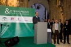

Overview
In June 2011, ALF partnered with the U.S. Department of Commerce’s Minority Business Development Agency, the Junta de Andalucía and AmCham-Spain to organize a landmark certified trade mission to Seville and Madrid focused on the Information and Communication Technology sector. It was the first certified ICT trade mission of its kind between the United States and Spain.
Program Architecture
The mission gathered 22 U.S. companies alongside senior representatives from the U.S. Embassy, the International Trade Administration and the U.S. Commercial Service. From Spain, more than 30 ICT firms and institutions participated, including Cartuja 93 Technology Park, Oracle, Novasoft and AT4 Wireless.
The program generated more than 198 meetings in Seville and Madrid, supplemented by additional virtual meetings, connecting American firms in cybersecurity, telecommunications, software, renewable energy and logistics with Spanish counterparts.
Outcomes & Legacy
The mission produced important MOUs, including a long-term consulting framework between the Hispanic Technology and Telecommunications Partnership and ETICOM, as well as an agreement between Billington CyberSecurity and ETICOM. It also opened negotiations for outsourcing, technology transfer and legal services.
The mission carried exceptional diplomatic weight, with the participation of Ambassador Alan Solomont, Under Secretary of Commerce Francisco Sánchez and Deputy Assistant Secretary Juan Verde. It demonstrated how certified missions can blend economic diplomacy with practical business results.
Seville ICT Certified Trade Mission in Pictures
A visual record of institutional meetings, business matchmaking sessions, sector briefings and networking moments that shaped the mission.
